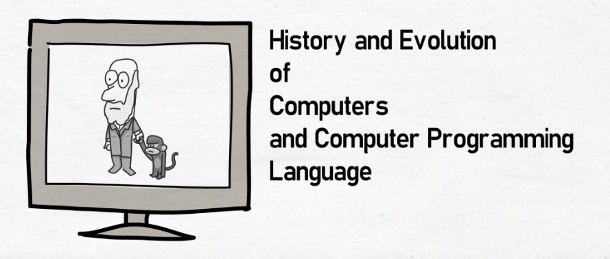
"Computer"
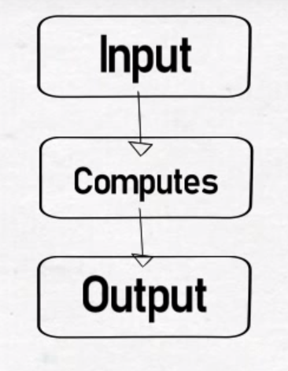
1822
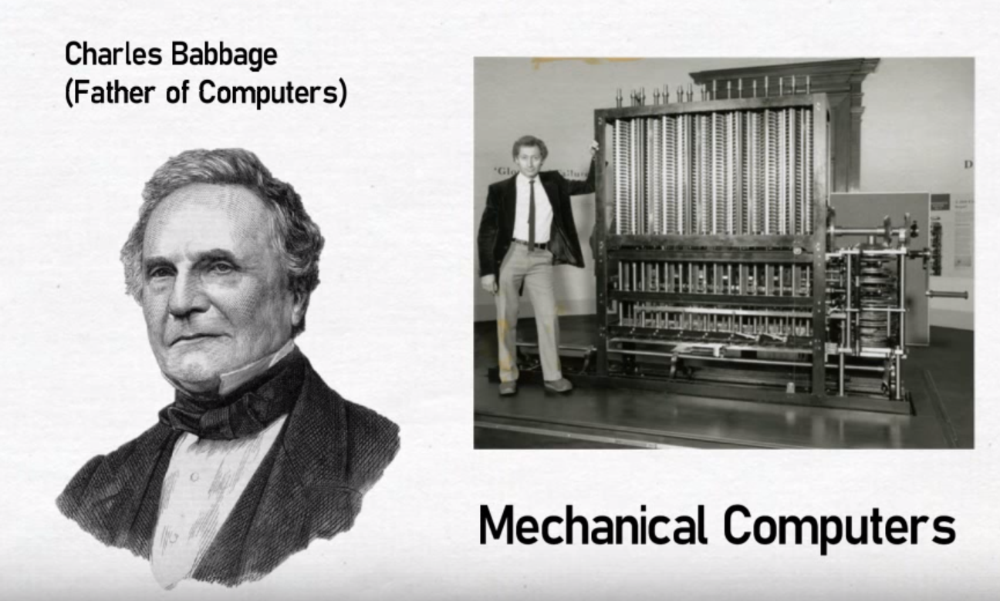
1936
Alan Turing(Turing Machine)
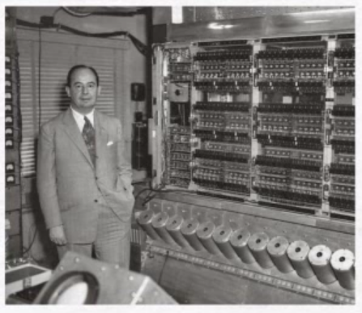
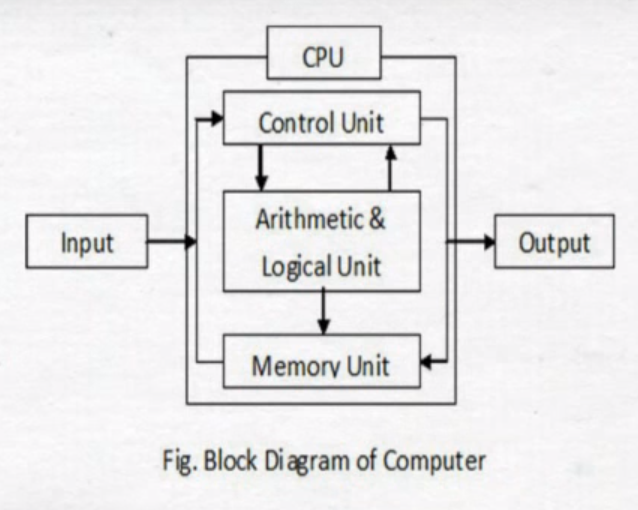
Late 1940's
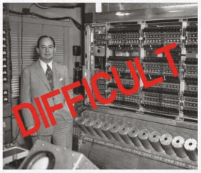
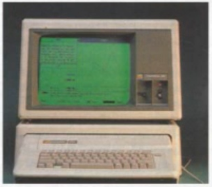 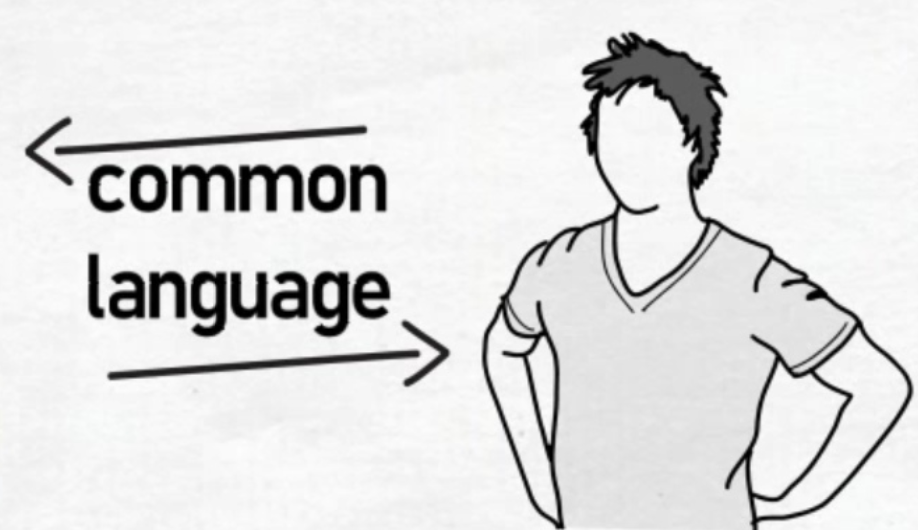
Assembly language
(first developed in 1947)
Creation of high-level languages (closer to humans)
New Languages
- Autocode - 1952
- FLOW-MATIC - 1955
- IPL(Information Processing Language) - 1956
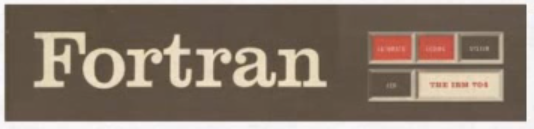
Fortran - 1954-1958
(FORmula TRANslator system)
Lisp - 1958-1960
(LISt Processing)
COBOL - 1960
(COmmon Business Oriented Language)
Expansion of specialized languages
and incoming of more general languages
- APL(A Programming Language) - 1964
-
BASIC(Beginners All-purpose Symbolic Instruction Code) - 1964
- Simula 67 - 1962-1967
- BCPL(Basic Combined Programming Language) - 1965
Language aimed to ease the building of compilers, and to lead teaching by forcing to a structured programming.
1970
UNICS (BUILD IN ASSEMBLY LANGUAGE)
New and important programming language is born
C - 1973
C Language is the successor of B language, which is the successor of BCPL
SQL(Structured Query Language) - By IBM in 1970+
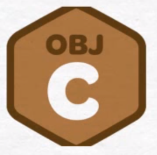
Brad Cox in 1984
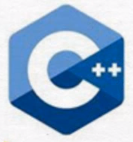
Bjarne Stroustrup in 1981-1986
Perl(Practical Extracting and Report Language) - 1987
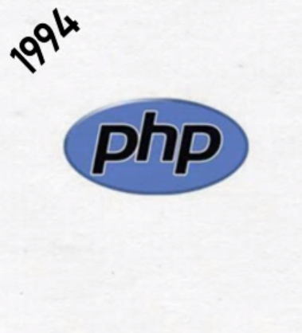
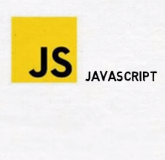
1997
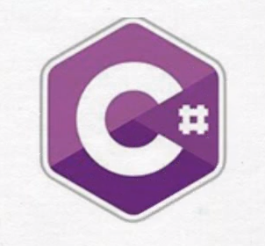 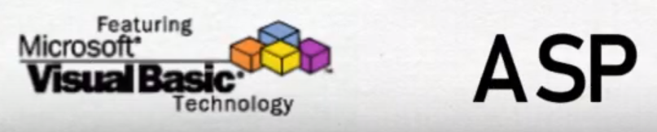
Internet and Big Data Age

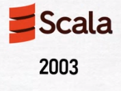
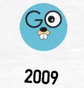
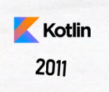
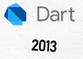
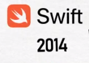